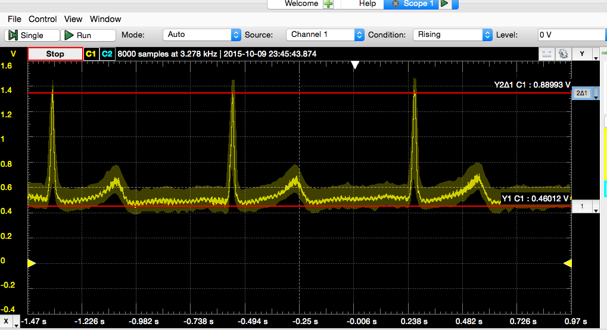

Currently a Biomedical & Clinical and Electrical Engineering student at California State University Long Beach specializing in Digital Signal Processing.
-Possess general knowledge of FIR and IIR Filters. -Implemented FIR Filters using Xilinx ISE 14.7 System Generator and the Nexys2 Board.
-Designed and implemented a basic ECG.
-Designed and implemented an Automated Automotive Climate-Control System. -Designed to keep a small space at a reasonable temperature when introduced to heat or cold weather.
-Proficient with: Microsoft Office (Word, Excel, PowerPoint), MatLab, Simulink, Xilinx System Generator 14.7 -Familiar with: AVR Studio, Basic Stamp 2, VHDL, Xilinx ISE Project Navigator, Arduino Uno, Raspberry Pi 2